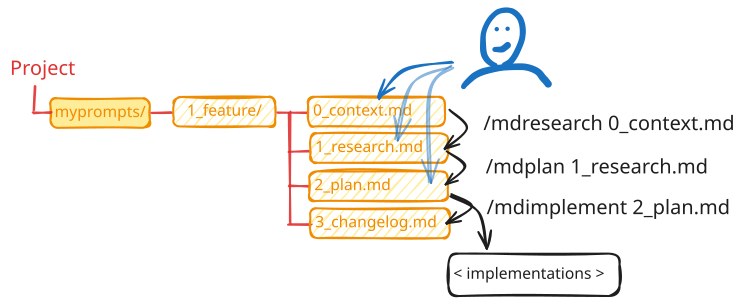
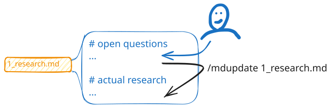

TL;DR - Installér: /plugin install md3step. Skriv 0_context.md → /mdresearch 0_context.md → rediger 1_research.md → /mdplan 1_research.md → rediger 2_plan.md → /mdimplement 2_plan.md → gennemgå 3_changelog.md. Brug /mdupdate <fil> efter inline-redigeringer. Spring over til små opgaver.
4. md3step
md3step-processen: Undersøg, Planlæg, Implementer
Dette er mønsteret for avancerede brugere. I stedet for at løse en kompleks opgave på én gang opdeler du den i tre afgrænsede trin - hvert trin producerer en fil, som det næste bygger på. Det giver to centrale fordele:
- Du kan nemt gennemgå, redigere og forfine planer undervejs.
- Du afdækker ukendte faktorer og manglende specifikationer i dit input.
Analogi - md3step

- Du går ikke til lægen med mavesmerter og forventer at blive lagt direkte på operationsbordet.
- Først laver lægen en undersøgelse - samler information og forstår situationen (
/mdresearch).
- Så laver de en behandlingsplan - hvad der skal gøres og i hvilken rækkefølge (
/mdplan).
- Først derefter kommer selve behandlingen (
/mdimplement).
- Det samme gælder her: at hoppe direkte til implementering med en vag prompt er som at springe undersøgelsen over.
Installér via skillhub:
/plugin marketplace add https://github.com/EmilMachine/skillhub
/plugin install md3step
Hvorfor md-præfikset?
Skills hedder /mdresearch, /mdplan, /mdimplement, /mdupdate - ikke /research, /plan osv. Det er bevidst. Ord som plan, research og implement er tæt på reserverede nøgleord i mange agenter og værktøjer, nu og i fremtiden. md-præfikset undgår stille kollisioner og refererer til arbejdet med md-filer.
Hvorfor .md-filer?
- Den vigtigste fordel er, at du kan redigere. I mange andre flows er det svært at fjerne, tilføje eller ændre i research og planer.
- Gemte trin. Når
1_research.md er skrevet, kan du lukke computeren og vende tilbage ugen efter. En live-session er sværere at genoptage.
- Atomiske trin. Du kan rydde konteksten mellem hvert trin og stole på implementeringen, fordi inputtet er klart og detaljeret - tvetydighed er afklaret.
Der er lidt overhead ved dette. Jeg bruger det normalt til mellemstore og store opgaver. Småting, fejlfinding og justeringer klarer jeg uden for frameworket.
Arbejdsgangen
Processen kører over fire nummererede filer i en mappe du vælger:
0_context.md ← du skriver denne
1_research.md ← /mdresearch producerer denne
2_plan.md ← /mdplan producerer denne
3_changelog.md ← /mdimplement producerer denne

Du skriver 0_context.md. De tre skills producerer resten. Efter hvert trin kan du læse outputtet, besvare åbne spørgsmål inline og redigere inden du fortsætter - agenten venter på dig.
Trin 0: Skriv kontekst
Opret myprompts/min-feature/0_context.md og beskriv hvad du vil gøre, og relevant kontekst der er nødvendig for at få det gjort. Dette er dit input til flowet.
Trin 1: Research
/mdresearch tasks/min-feature/0_context.md
Agenten læser kodebasen og skriver 1_research.md i samme mappe - nuværende tilstand, mangler, relevante fil:linje-referencer. Åbne spørgsmål fremhæves øverst i filen. Læs den, besvar spørgsmålene inline, og kør /mdupdate <sti>/1_research.md for at folde dem ind i hoveddelen inden du fortsætter.
Bed om afklaring eller brug /procon3 hvis du er usikker på hvordan du skal besvare noget.
Trin 2: Plan
/mdplan tasks/min-feature/1_research.md
Producerer 2_plan.md: nummererede, atomiske, testbare trin. Hvert trin har sektioner for Handlinger, Filer og Verifikation. Åbne spørgsmål fra research overføres; agenten forsøger at besvare dem fra konteksten inden den lister noget uløst.
Dette er trinnet du skal redigere. Tilføj begrænsninger, skær scope, omordner trin, besvar åbne spørgsmål inline. Agenten bestemte ikke planen - det gjorde du, med dens hjælp.
/mdupdate <sti>/1_research.md
Trin 0.5 (valgfrit): opdatér baseret på svar
Hvis du har tilføjet inline-svar eller redigeringer til 1_research.md eller 2_plan.md:
/mdupdate tasks/min-feature/2_plan.md

/mdupdate folder dine inline-svar ind i filens hoveddel, fjerner de løste spørgsmålsmarkører og rejser eventuelle nye spørgsmål der opstår fra svarene. Spring det over hvis du ikke har redigeret - det er ikke altid nødvendigt. Uden det kan agenten som regel arbejde videre fra dine rå svar, men kan misse opfølgningsspørgsmål og efterlade forældet tekst i filens hoveddel.
Du kan også bruge det bevidst: skriv dit eget spørgsmål + svar og kør /mdupdate, så rettes en systematisk fejl overalt hvor den forekommer.
Trin 3: Implementér
/mdimplement tasks/min-feature/2_plan.md
Udfører hvert trin sekventielt, verificerer efter hvert, og skriver 3_changelog.md med status per trin, ændrede filer (sti:linje), testresultater og en Gotchas-sektion hvis noget gik skævt. Ingen automatiske git commits - gennemgå diff'et selv.
Hvornår man ikke skal bruge dette
md3step er overhead til små opgaver. Rette en fejl, omdøbe en funktion, tilføje et felt til en type - det gøres i én omgang. Brug processen til alt der rører mere end et par filer, er komplekst eller involverer arkitektoniske valg.
Inspirationskilder